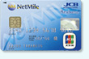

ネットマイル社、提携クレジットカードのサービスを強化
～ セントラルファイナンス社と提携、新『NetMile Card』も登場 ～
インターネット上の共通ポイントプログラムを運営する株式会社ネットマイル（本社：東京都千代田区、代表取締役社長：山本 雅、以下、ネットマイル社）は、このたび、ネットマイルが貯まる提携クレジットカード『NetMile Card』について、ユーザーの満足度と利便性向上のため、新規提携カード発行や既存提携カードの特典内容の見直しなど、サービスを強化いたします。
ネットマイル社では、お買い物をするとネットマイルが貯まるECモール「お買い物deマイル」を重要コンテンツとしており、利用者数もECの急速な普及により年々増加しています。
『NetMile Card』を「お買い物deマイル」で利用することで、利用者はお買い物でのネットマイルとカード利用でのネットマイルがあわせて獲得でき、日常的なお買い物でお得を実感できるサービスとなっています。
このたび、ユーザーの利便性向上のため、新規提携クレジットカードとして、株式会社セントラルファイナンス（本社：愛知県名古屋市、代表取締役社長：土川立夫）と提携し、リボルビング払い専用クレジットカード『NetMile Card』を2008年11月11日（火）より発行、募集を開始しました。この新しい『NetMile Card』利用時のポイント還元率は従来の提携クレジットカードと比べ、最大二倍となっています。
またサービス強化の施策として、従来から発行していた三菱UFJニコス株式会社（本社：東京都千代田区、代表取締役社長：佐々木 宗平）DCカードとの提携クレジットカードのポイント還元率を「1,000円につき6mile」から「1,000円につき10mile」へと上げました。
ネットマイル提携クレジットカードのサービス概要
| CFカード |
提携先 | 株式会社セントラルファイナンス |
|---|---|---|
| カード名称 | NetMile Card（ネットマイルカード） | |
| 募集開始日 | 2008年11月11日（火） | |
| 国際ブランド | JCB | |
| 年会費 | 無料 | |
| ポイント サービス |
カード利用1,000円につき20mile さらに
|
|
| 支払い方法 | リボルビング払い専用カード （毎月のお支払い額を3つの定額コースから選択） |
| DCカード |
提携先 | 三菱UFJニコス株式会社 DCカード |
|---|---|---|
| カード名称 | NetMile Card（ネットマイルカード） | |
| 国際ブランド | VISA・MasterCard | |
| 年会費 | 無料 | |
| ポイント サービス |
|
| JCBカード  |
提携先 | 株式会社ジェーシービー |
|---|---|---|
| カード名称 | ネットマイルカード プラス | |
| 国際ブランド | JCB | |
| 年会費 | 無料 | |
| ポイント サービス |
カード利用1,000mileにつき 10mile | |
| 支払い方法 | リボルビング払い専用カード ※現在は新規申込を行っておりません。 |
※詳細は、『NetMile Card』ご説明ページでご確認ください。 http://www.netmile.co.jp/nm_biz/card/
ネットマイル社ではこれからも、累計登録会員数約396万ユーザーの利便性向上を目指し、ユーザーサービスの拡充に努めてまいります。
【株式会社ネットマイルについて】 http://biz.netmile.co.jp/
2000年11月設立。三井物産株式会社の連結子会社で、インターネット上の共通ポイントプログラム「ネットマイル」を運営。同社のIT事業戦略の一端を担う。
「ネットマイル」は、2001年4月にサービスを開始。累計加盟サイト数1,000サイト、累計登録会員数約396万人（2008年10月末現在）の規模は、日本最大級。2007年12月、インターネット業界最大規模のオンラインイベントである『 Web of the Year 2007 』ポイント部門で第1位に選ばれる。
| 社名 | 株式会社ネットマイル |
|---|---|
| 代表取締役社長 | 山本 雅 |
| 所在地 | 〒101-0054 東京都千代田区神田錦町3-26 一ツ橋 SIビル 9F |
| 資本金 | 396百万円 |
| 設立 | 2000年11月7日 |
| 事業内容 |
|
| 出資企業 | 三井物産株式会社、トランスコスモス株式会社 他 |
| サービスサイト | http://www.netmile.co.jp/ |
【当リリースに関する報道関係者お問合せ先】
株式会社ネットマイル 広報担当 ： 村井
Email ： 
TEL ：